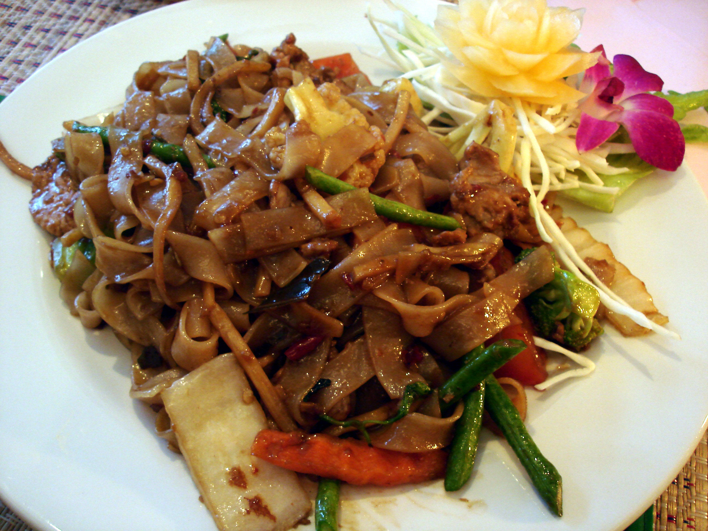

Pad Kee Mao

The Drunkard's Noodles
Country of Origin : Thailand
Pad Kee Mao, also often referred to as Drunken Noodles, is a Chinese influenced Thai dish. It has a salty, garlicy flavor which complements crisp vegetables and basil.
Ingredients List
- 3 tbsp black soy sauce
- 1 tbsp sweet soy sauce
- 1 tbsp oyster sauce
- 2 tbsp fish sauce
- 3 tbsp canola or peanut oil
- 2-3 garlic cloves, minced
- 2 eggs
- 1/3 pounds beef, pork or chicken (thinly sliced)
- ½ medium white onion, sliced
- 4 cups fresh wide rice noodles
- 1 cup Thai basil leaves
- ½ medium tomato, sliced
- ½ tsp white pepper
Directions
- Combine sauces in a small bowl and set aside.
- Soften noodles in hot water, strain, set aside.
- Heat oil in Wok or Saute Pan, add garlic until light brown.
- Add in eggs, lightly scramble.
- Add meat and onions, folding constantly until meat is half cooked.
- Add noodles, sauce, tomatoes and basil. Cook 3 to 5 minutes. Make sure noodles are cooked until edges are slightly crisp
- Sprinkle white pepper to combine well, season to taste.
Notes
Several theories exist on the naming of this dish. One theory holds that it was devised by someone who came home drunk but still wanted something to eat that could be made easily with whatever ingredients were available. As such it should actually be renamed "drunkard's noodles". Yet another theory states that this dish is so spicy that one needs to drink beer to temper the heat.